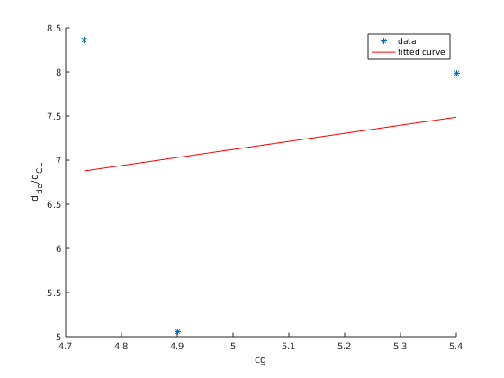

clear; close all; clc;
load("Data_ft4.mat")
cg = 4.9;
figure
plot(ft40.Vind_kias,'.')
indexes = [1438, 1482, 201, 1558, 541];
figure
plot(ft4n6.Vind_kias,'.')
indexes_n4 = [8191, 9264, 12096, 887, 12776];
figure
plot(ft42.Vind_kias,'.')
indexes_2 = [1079, 1020, 671, 887, 928];
tables = analysis_1_2(ft40,indexes);
tables_n6 = analysis_1_2(ft4n6,indexes_n4);
tables_2 = analysis_1_2(ft42,indexes_2);
figure
hold on
tas_ea = fit(tables_n6{1}(:,1),tables_n6{1}(:,2), 'poly2');
plot(tas_ea,tables_n6{1}(:,1),tables_n6{1}(:,2),'*-')
xlabel('True Air Speed (knots)')
ylabel('Elevator Angle (degrees)')
title('Datum')
hold off
figure
hold on
cl_ea = fit(tables_n6{2}(:,2),tables_n6{2}(:,3), 'poly1');
plot(cl_ea,tables_n6{2}(:,2),tables_n6{2}(:,3),'*-')
xlabel('CL')
ylabel('Elevator Angle (degrees)')
title('Datum')
hold off
table3(1,:) = [cg,cl_ea.p1,cl_ea.p2];
figure
hold on
tas_ea = fit(tables{1}(:,1),tables{1}(:,2), 'poly2');
plot(tas_ea,tables{1}(:,1),tables{1}(:,2),'*-')
xlabel('True Air Speed (knots)')
ylabel('Elevator Angle (degrees)')
title('Datum minus 6')
hold off
figure
hold on
cl_ea = fit(tables{2}(:,2),tables{2}(:,3), 'poly1');
plot(cl_ea,tables{2}(:,2),tables{2}(:,3),'*-')
xlabel('CL')
ylabel('Elevator Angle (degrees)')
title('Datum plus 6')
hold off
table3(2,:) = [cg+.5,cl_ea.p1,cl_ea.p2];
figure
hold on
tas_ea = fit(tables_2{1}(:,1),tables_2{1}(:,2), 'poly2');
plot(tas_ea,tables_2{1}(:,1),tables_2{1}(:,2),'*-')
xlabel('True Air Speed (knots)')
ylabel('Elevator Angle (degrees)')
title('Datum minus 2')
hold off
figure
hold on
cl_ea = fit(tables_2{2}(:,2),tables_2{2}(:,3), 'poly1');
plot(cl_ea,tables_2{2}(:,2),tables_2{2}(:,3),'*-')
xlabel('CL')
ylabel('Elevator Angle (degrees)')
title('Datum minus 2')
hold off
table3(3,:) = [cg-(2/12),cl_ea.p1,cl_ea.p2];
figure
hold on
cg_slope = fit(table3(:,1),table3(:,2), 'poly1');
plot(cg_slope,table3(:,1),table3(:,2),'*')
xlabel('cg')
ylabel('d_d_e/d_C_L')
hold off
fprintf("The neutral point is %f \n", cg_slope.p2)
static_margin = cg_slope.p2 + cg_slope.p1*(cg+1);
fprintf("The stick fixed static margin is %f \n", static_margin)
cl_at_100 = mean([tables{2}(3,2),tables_2{2}(3,2),tables_n6{2}(3,2)]);
fprintf("The elevator deflection is %f \n", static_margin*cl_at_100+mean(table3(:,3)))
function tables = analysis_1_2(data,ind)
rho = 20.48;
for ii = 1:5
table1(ii,:) = [data.Vtrue_ktas(ind(ii)), -data.elev1__deg(ind(ii))];
qbar = .5*rho*(data.Vtrue_ktas(ind(ii))*1.68781)^2;
table2(ii,:) = [qbar, data.cltotal(ind(ii)), -data.elev1__deg(ind(ii))];
end
tables = {table1, table2};
end
The neutral point is 2.549760
The stick fixed static margin is 7.944244
The elevator deflection is -1.189888

